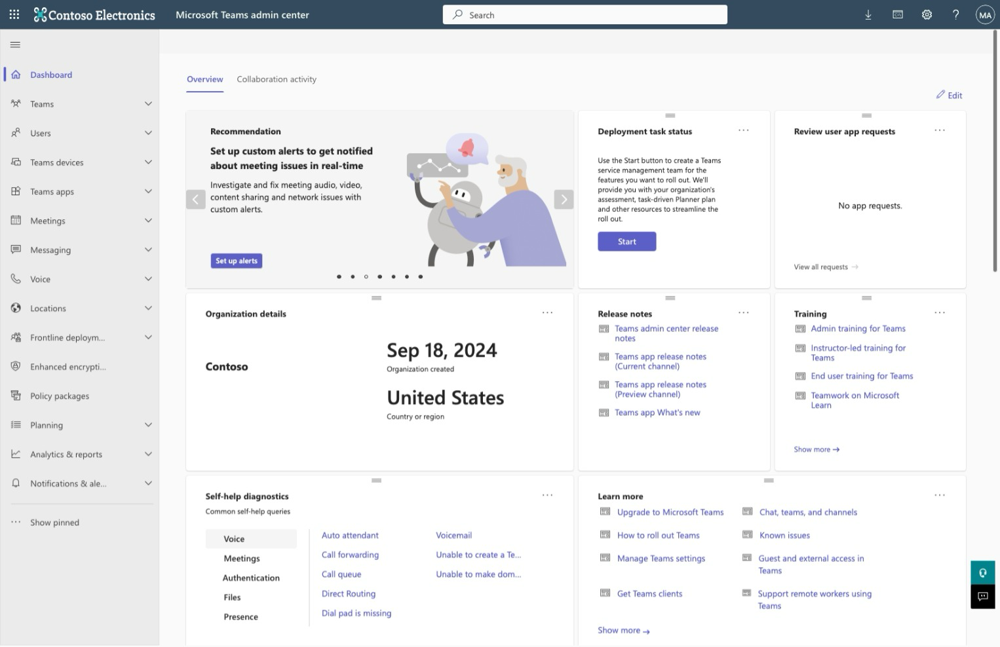
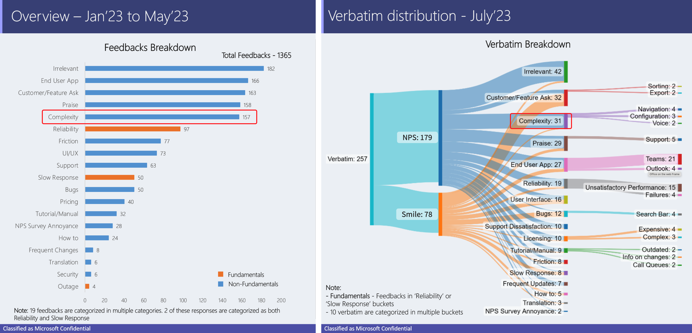
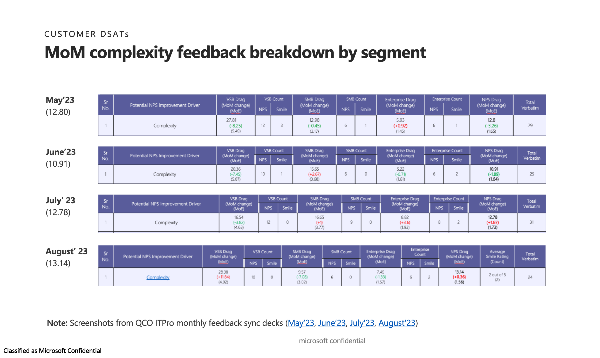
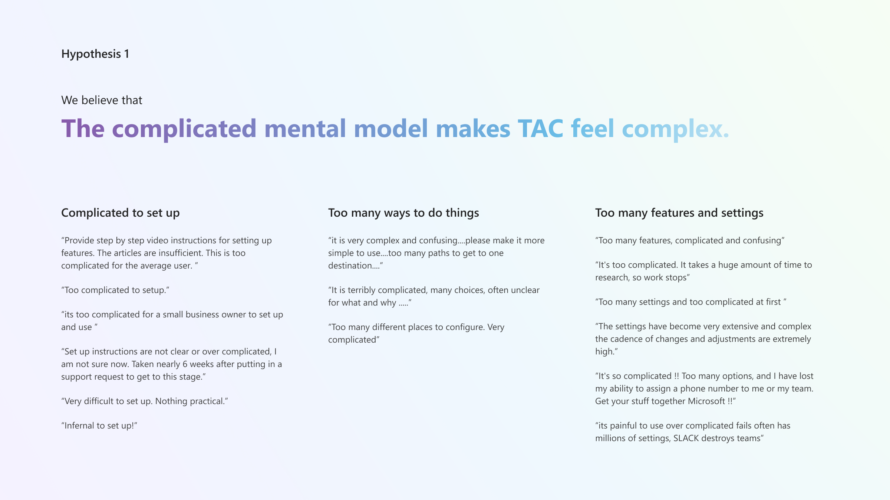
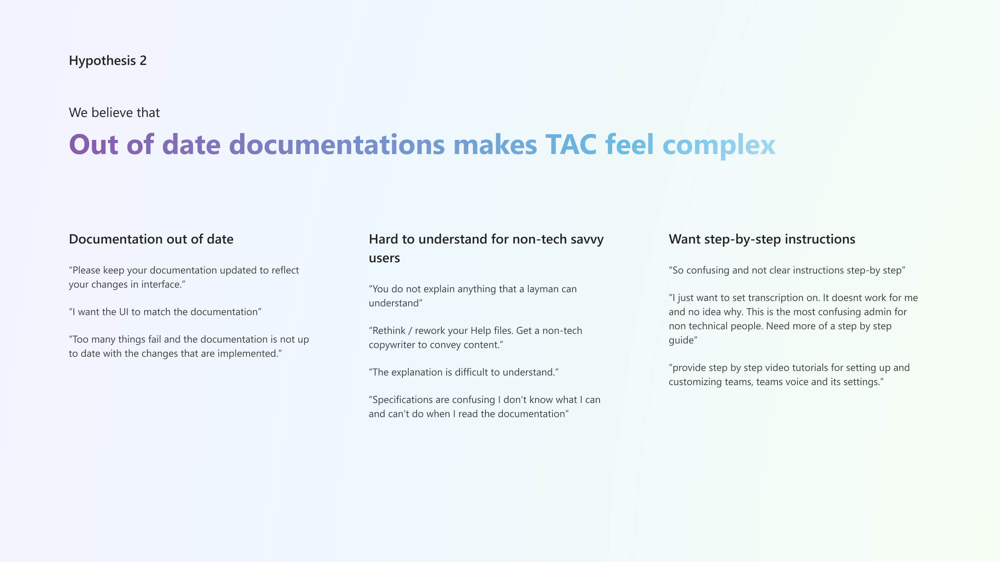
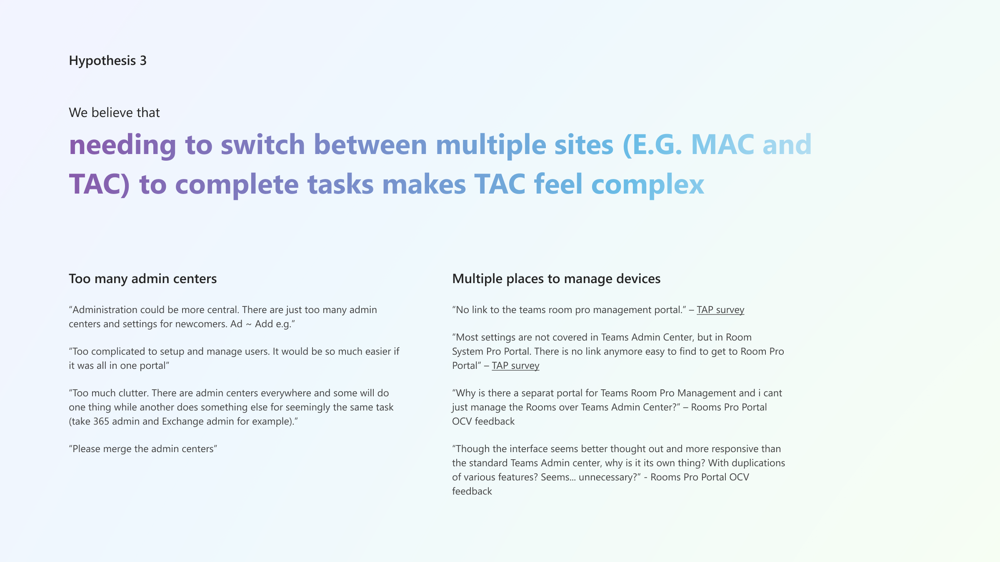
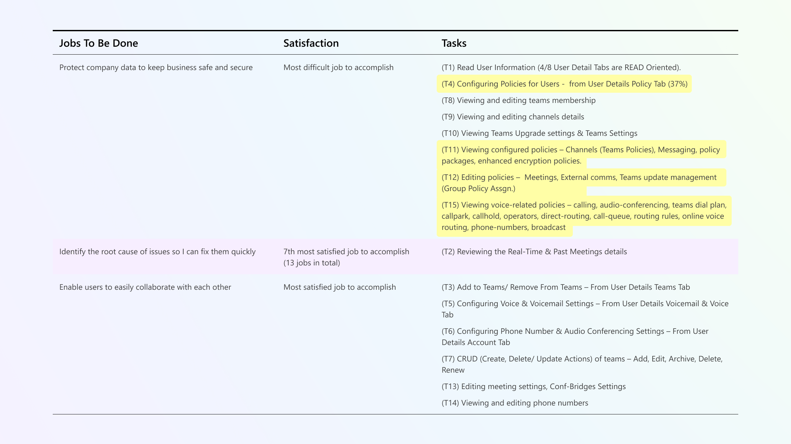

Simplify Teams Admin Center
- Role: Lead product designer
- Responsibilities: Customer feedback analysis, experience audit, design concept explorations, prototyping, and design spec.
- Year: 2023-2024
Outcomes:
- Increased overall policy management user SAT by 15%.
- Reduced delete a policy with assigned users task from 13 to 4 steps.
- Reduced the time to find the right policy and settings in policy tab on user details page by 30%.
Background
Teams Admin Center is the website IT admins use to manage how users in his or her organization can use Microsoft Teams. It has approx. 270 MAU with 44.2% from small to medium business, 28.7% from enterprise, , 15.6% from small to medium corporation, and 11.5% from education.
The team has been tracking NPS over the past year. TAC's NPS (measured every month) has been hovering around 35 on average for all customer segments for the past year. In comparison, SharePoint Admin Center (SAC) has a NPS around 55 and Microsoft 365 Admin Center (MAC) has a NPS around 50.4. It's obvious that TAC's score is behind both other Microsoft Admin Centers and the industry average. As a result, the business set the goal to improve customer satisfaction in fiscal year 2024.
The website's ownership is distributed amongst three primary teams. The Redmond team owned the framework, the high-level vision, the apps management, and security areas of the site. The Vancouver team owned the voice experience. The IDC (India Development Center) team owned the remaining parts of the experience.
My contributions
I was the lead designer of the simplification project and was responsible for driving the project from the creating the vision, pitching the project, leading the design iterations, and collecting customer feedback.
- Analyzed and synthesized the NPS verbatim to identify themes in customer feedback.
- Worked closely with PM and user research to conduct survey to collect customer feedback on complexity.
- Prioritized focus areas based on customer's JTBD, themes from feedback analysis, and area usage telemetry.
- Pitched the simplification project to multiple stakeholders including PM owner and VP and received buy-ins.
- Led v-team experience audit to identify customer pain-points and ensure stakeholder alignment.
- Led design explorations/prototyping efforts and iterated on design solutions based on customer feedback sessions.
Identify the source of the low NPS issue
To identify the source of TAC's low NPS score, I started from NPS data. Complexity is the top NPS complaint from customers consistently for the past 6+ months.
A deeper look at the feedback reveals that the complexity issue is more severe for Very Small Businesses and Small to Medium Businesses than the Enterprises. However, we decided to focus on the Enterprise customers given they importance.
Started with hypotheses
With the top issue and customer segment identified, I started with a list of hypotheses based on my perception and conversations with other team members and collected evidence from different sources to verify them.
  The team agreed to focus on addressing the customer pain-point based on the number of feedback received.
Focus on the high importance, high-frequency, and low satisfaction tasks
Even after the team decision to focus on the top theme in complexity, the scope is still too broad. I worked with the user researcher closely to identify the Jobs To Be Done and the customer's satisfaction of these jobs in TAC.
Paired with the task frequency data from the telemetry, I pitched to focus on simplifying policy management in the first phase given its high importance, high frequency, and low satisfaction.
Zero in on the customer pain-points
Two of the challenges of the simplification project is the lack of actionable customer feedback and the lack of user research resource. Even though many customers complained that TAC is complex, few of them offered specific and actionable feedback in their verbatim. To ensure the team agreed on the problems, I organized multiple experience audit with the stakeholders to identify customer pain-points.

Design explorations
The final design solution can be organized into two categories. First, layout changes to an existing page. Second, changes to an existing task flow.
Layout changes
- Policy page
- Inconsistent policy pages throughout the site (some policy page are shown as a right pane others are shown in their own pages).
- Confusing to view users assigned to a policy (navigated to a different page)/li>
- Policy tab on the user details page
- Alphabetic table layout makes finding the most frequently managed policy difficult.
- Policy package module confuses users about the current effective policies.
- Policy confirmation dialog change
- Admins are not sure how long the changes made to a policy will take effect.
- Admins are not sure the number of users who are going to be impacted by a change.
Customer pain-points

Customer pain-points
Customer pain-points

Task flow change
- Delete a policy with users assigned to it
- The current task takes 13 steps that navigate users to a few different pages
- The assignment of the new effective policy is manual
Customer pain-points